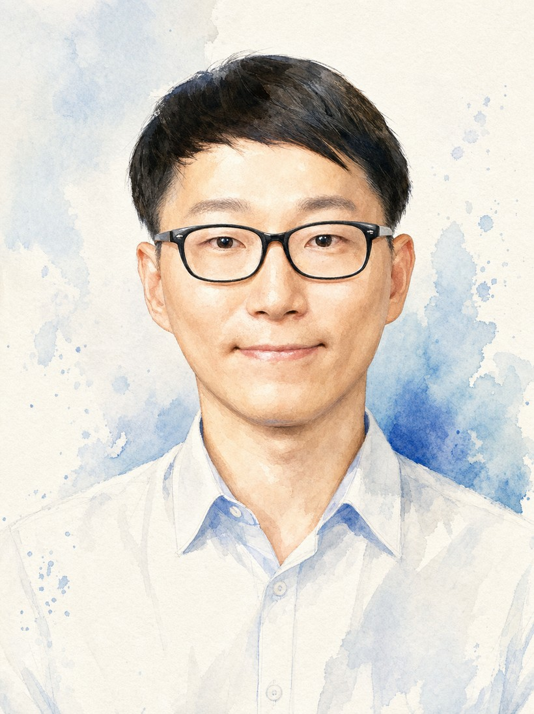

염홍기 Hong Gi Yeom
조선대학교 IT융합대학 부교수 · 뇌 및 인공지능 연구실 책임교수
학력
Seoul National University, Seoul, Korea
Chung-Ang University, Seoul, Korea
Chung-Ang University, Seoul, Korea
연구 경력
University of Birmingham, Birmingham, UK
Chosun University, Gwangju, Korea
Chosun University, Gwangju, Korea
Seoul National University, Seoul, Korea
Seoul National University, Seoul, Korea
학술 활동
수상
특허
한국·미국·일본·PCT에 걸친 14개 특허 패밀리 — 뇌-컴퓨터 인터페이스 장치와 신경 신호 분석 방법.
초청 강연
“Future of Brain-Computer Interfaces” · 한국과학기술단체총연합회(KOFST)
“EEG Analysis using MATLAB” · 2021 Online KHBM Summer School
“AI Principles & Research Trends in BCI” · 동서대학교
“Development of BCI systems for daily life” · KRISS
“Studies for Practical BMI systems” · 한동대학교
“EEG/MEG analysis using deep learning” · 2020 Online KHBM Summer School
“Intelligent Brain-Computer Interface” · 공주대학교
“Brain and Brain-Machine Interfaces” · Redone Technology
“Prediction of Reaching Movements” · 대한뇌파신경생리학회
“Machine Learning and BCIs” · 한국뇌파연구회
“Brain Mechanism and Applications” · 한국지능시스템학회
“Introduction to Brain-Machine Interface” · 전남대학교 의과대학
“Studies for Practical BMI systems” · GIST
그 외 다수의 국내 대학·연구기관 초청 강연.